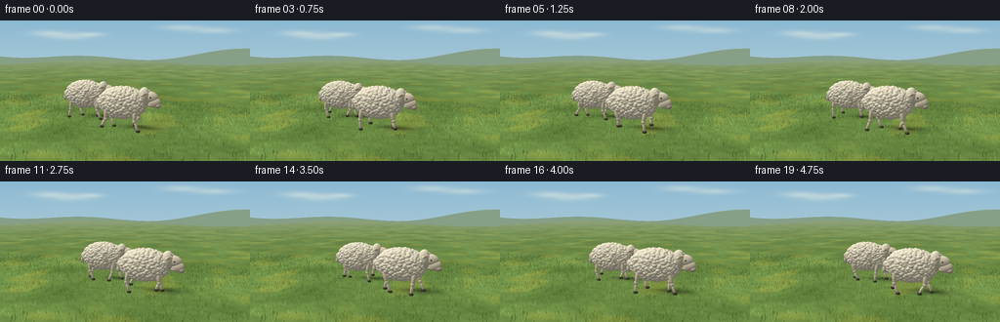
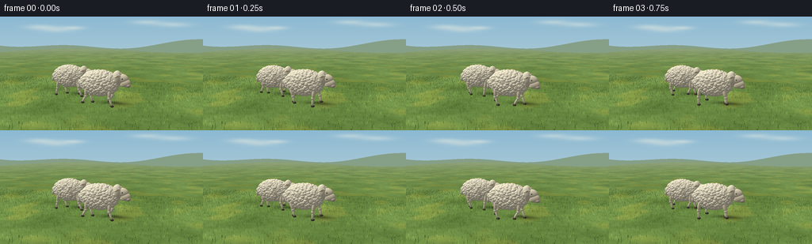

CODING AGENTS AS PIXEL WORLD MODELS
traex/GPT-6.1-Sol · instance_preservation_0016
点击播放 · 原生 RGB 像素
逐轮保存的候选
回放视频、检查图与代码变化。
每份候选均可单独播放。实际图片检查记录在下方工具轨迹中。
候选 01播放与检查图
点击播放 · 原生 RGB 像素


展开代码变化
--- 上一保存版本
+++ 本次保存版本
@@ -0,0 +1,276 @@
+"""A deterministic, from-scratch pastoral scene, using analytic ellipsoid ray tracing."""
+from pathlib import Path
+import json, math
+import numpy as np
+from PIL import Image, ImageDraw
+import artifact_io
+
+ROOT=Path(__file__).resolve().parent
+SPEC=json.loads((ROOT/'task_spec.json').read_text())
+W,H=SPEC['width'],SPEC['height']
+SS=3
+w,h=W*SS,H*SS
+rng=np.random.default_rng(631)
+CAM=np.array([3.7,3.0,11.4])
+TARGET=np.array([0.0,1.25,0.0])
+FW=(TARGET-CAM); FW/=np.linalg.norm(FW)
+RIGHT=np.cross(FW,[0.,1.,0.]); RIGHT/=np.linalg.norm(RIGHT)
+UP=np.cross(RIGHT,FW)
+FOCAL=300*SS
+CX,CY=w/2,76*SS
+SUN=np.array([-0.48,0.80,0.36]); SUN/=np.linalg.norm(SUN)
+yy,xx=np.mgrid[:h,:w]
+RAYS=FW+(xx[...,None]-CX)/FOCAL*RIGHT-(yy[...,None]-CY)/FOCAL*UP
+RAYS/=np.linalg.norm(RAYS,axis=2,keepdims=True)
+TG=-CAM[1]/RAYS[:,:,1]
+GP=CAM+RAYS*TG[:,:,None]
+VALID=(TG>0)
+
+
+def project(p):
+ p=np.asarray(p)-CAM
+ z=p@FW
+ return np.stack([CX+FOCAL*(p@RIGHT)/z,CY-FOCAL*(p@UP)/z],axis=-1),z
+
+
+def noise(x,z,scale=1):
+ x=x*scale; z=z*scale
+ ix=np.floor(x); iz=np.floor(z)
+ fx=x-ix; fz=z-iz
+ fx=fx*fx*(3-2*fx); fz=fz*fz*(3-2*fz)
+ def hash(a,b):
+ q=np.sin(a*127.1+b*311.7+82.45)*43758.5453
+ return q-np.floor(q)
+ return ((hash(ix,iz)*(1-fx)+hash(ix+1,iz)*fx)*(1-fz)+
+ (hash(ix,iz+1)*(1-fx)+hash(ix+1,iz+1)*fx)*fz)
+
+
+def background(centers):
+ # A wide, softly hazy meadow under a pale blue sky.
+ vertical=(yy/h)[:,:,None]
+ sky=np.array([140.,185.,211.])[None,None,:]*(1-vertical)+np.array([221.,230.,219.])[None,None,:]*vertical
+ sky=np.broadcast_to(sky,(h,w,3)).copy()
+ cloud=np.zeros((h,w))
+ for x,y,sx,sy in [(49,13,24,4),(72,16,28,5),(94,14,17,3),(185,7,27,4),(219,10,29,4)]:
+ cloud+=np.exp(-(((xx/SS-x)/sx)**2+((yy/SS-y)/sy)**2)*1.8)
+ cloud=np.clip(cloud*.35,0,.72)
+ sky=sky*(1-cloud[...,None])+np.array([247,245,229])*cloud[...,None]
+ distant=34+5*np.sin(xx/SS*.015)+2.8*np.sin(xx/SS*.041+1.2)
+ ridge2=43+3.0*np.sin(xx/SS*.023+2.5)
+ mask=yy/SS>distant
+ sky[mask]=np.array([134,159,135])+np.column_stack([np.zeros(mask.sum())]*3)
+ mask2=yy/SS>ridge2
+ sky[mask2]=np.array([121,148,108])
+ X,Z=GP[:,:,0],GP[:,:,2]
+ n1=noise(X,Z,.48); n2=noise(X,Z,3.8); n3=noise(X,Z,30)
+ raw=np.empty((h,w,3))
+ # Vegetation is warm in the sunlight and cool green at a distance.
+ raw[:,:,0]=83+27*n1+12*n2+8*n3
+ raw[:,:,1]=112+31*n1+15*n2+7*n3
+ raw[:,:,2]=49+20*n1+11*n2+5*n3
+ # Subtle pasture irregularities, not a uniform artificial lawn.
+ patch=np.clip((noise(X+80,Z-43,.8)-.57)*4,0,.7)
+ raw+=patch[...,None]*np.array([28,13,-1])
+ for cx,cz in centers:
+ # Wide soft shadow from the woolly torso, plus a denser central umbra.
+ sx=cx-1.10*SUN[0]/SUN[1]; sz=cz-1.10*SUN[2]/SUN[1]
+ rr=((X-sx)/1.08)**2+((Z-sz)/.52)**2
+ sh=.31*np.exp(-rr*1.8)+.13*np.exp(-rr*4.5)
+ raw*=1-sh[...,None]
+ haze=np.clip((TG-16)/95,0,.78)
+ raw=raw*(1-haze[...,None])+np.array([148,165,134])*haze[...,None]
+ meadow=VALID & (yy/SS>ridge2)
+ sky[meadow]=raw[meadow]
+ return np.uint8(np.clip(sky,0,255))
+
+# Persistent blades are stationary relative to the earth.
+blades=[]
+for _ in range(19000):
+ x=rng.uniform(-12,12); z=rng.uniform(-6,14)
+ length=rng.uniform(.025,.13)
+ base=np.array([x,0,z]); tip=base+np.array([rng.uniform(-.03,.03),length,rng.uniform(-.025,.025)])
+ pp,dist=project(np.array([base,tip]))
+ if dist[0]>1 and 0<=pp[0,0]<w and 45*SS<pp[0,1]<h+4:
+ blades.append((dist[0],pp,rng.uniform(-.4,.5),rng.uniform(.65,1.25)))
+blades.sort(key=lambda a:-a[0])
+
+
+def grass(base):
+ img=Image.fromarray(base); d=ImageDraw.Draw(img)
+ for dist,pp,v,fac in blades:
+ x,y=pp[0]
+ ix=int(np.clip(x,0,w-1)); iy=int(np.clip(y,0,h-1))
+ col=base[iy,ix].astype(float)*fac+np.array([v*11,v*10,-v*7])
+ col=tuple(np.uint8(np.clip(col,0,255)))
+ d.line([tuple(pp[0]),tuple(pp[1])],fill=col,width=max(1,round(SS*.37*12/dist)))
+ return np.asarray(img).copy()
+
+
+def rot_z(a):
+ c,s=np.cos(a),np.sin(a)
+ return np.array([[c,-s,0],[s,c,0],[0,0,1.]])
+
+
+def basis_y(direction):
+ y=np.array(direction); y/=np.linalg.norm(y)
+ z=np.cross([1.,0.,0.],y)
+ if np.linalg.norm(z)<.001:z=np.cross([0.,0.,1.],y)
+ z/=np.linalg.norm(z); x=np.cross(y,z)
+ return np.stack([x,y,z],axis=1)
+
+# Individual locks of wool are kept fixed throughout the animation.
+wool=[]
+for seed in [18,92]:
+ r=np.random.default_rng(seed); locks=[]
+ count=620
+ golden=np.pi*(3-np.sqrt(5))
+ for k in range(count):
+ ny=1-2*(k+.5)/count
+ a=k*golden+r.uniform(-.14,.14)
+ v=np.array([np.sqrt(1-ny*ny)*np.cos(a),ny,np.sqrt(1-ny*ny)*np.sin(a)])
+ pos=v*np.array([.91,.565,.46])
+ sz=r.uniform(.059,.099)
+ locks.append((pos,np.array([sz*1.16,sz*.94,sz]),r.uniform(-8,6),r.uniform(0,20)))
+ wool.append(locks)
+
+
+class Renderer:
+ def __init__(self,rgb):
+ self.color=rgb.astype(np.float32)
+ self.depth=np.where(VALID,TG,np.inf).astype(np.float32)
+ def ellipsoid(self,c,rad,color,rotation=None,material='plain',seed=0):
+ c=np.asarray(c,float); rad=np.asarray(rad,float)
+ R=np.eye(3) if rotation is None else rotation
+ p,z=project(c)
+ if z<=.1:return
+ bound=FOCAL*max(rad)/(z-max(rad))*1.22+2
+ x0=max(0,int(p[0]-bound));x1=min(w,int(p[0]+bound)+1)
+ y0=max(0,int(p[1]-bound));y1=min(h,int(p[1]+bound)+1)
+ if x1<=x0 or y1<=y0:return
+ ds=RAYS[y0:y1,x0:x1]
+ o=(CAM-c)@R/rad
+ dr=(ds@R)/rad
+ A=np.sum(dr*dr,axis=2)
+ B=np.sum(dr*o,axis=2)
+ C=np.sum(o*o)-1
+ disc=B*B-A*C
+ t=(-B-np.sqrt(np.maximum(disc,0)))/A
+ old=self.depth[y0:y1,x0:x1]
+ hit=(disc>=0)&(t>0)&(t<old)
+ if not hit.any():return
+ hv=ds[hit]; ht=t[hit]
+ pos=CAM+hv*ht[:,None]
+ local=(pos-c)@R
+ norm=(local/rad**2)@R.T
+ norm/=np.linalg.norm(norm,axis=1,keepdims=True)
+ diffuse=np.maximum(0,norm@SUN)
+ shade=.52+.46*diffuse+.065*norm[:,1]
+ base=np.broadcast_to(np.asarray(color,float),(len(pos),3)).copy()
+ if material=='wool':
+ # Curled-fiber texture, with rounded clumps rather than polygonal facets.
+ q=pos*170
+ fiber=(np.sin(q[:,0]+np.sin(q[:,2]*.58)*2)*np.sin(q[:,1]*1.19+seed)+np.sin(q[:,2]*1.37+q[:,0]*.54))*.5
+ shade+=fiber*.037
+ shade*=.95+.05*np.maximum(norm[:,1],0)
+ elif material=='skin':
+ grain=np.sin(pos[:,0]*205+pos[:,2]*131)*np.sin(pos[:,1]*182)*.012
+ shade+=grain
+ illumination=shade[:,None]*np.array([1.035,1.01,.953])
+ out=base*illumination
+ # Creamy bounce from the pasture; quiet broad specular highlight on the eye.
+ if material=='eye':
+ halfway=SUN-hv; halfway/=np.linalg.norm(halfway,axis=1,keepdims=True)
+ spec=np.maximum(0,np.sum(norm*halfway,axis=1))**45
+ out+=spec[:,None]*180
+ self.color[y0:y1,x0:x1][hit]=np.clip(out,0,255)
+ old[hit]=ht
+ def segment(self,a,b,r,color,material='skin'):
+ a=np.asarray(a);b=np.asarray(b)
+ c=(a+b)/2; L=np.linalg.norm(b-a)
+ self.ellipsoid(c,[r,L/2+r*.5,r],color,basis_y(b-a),material)
+
+
+def draw_sheep(rr,cx,cz,t,identity):
+ phase=t*2*np.pi*.94+identity*1.1
+ bob=.019*np.cos(phase*2)
+ center=np.array([cx,1.085+bob,cz])
+ def E(p,rad,col,R=None,mat='plain',seed=0):
+ rr.ellipsoid(np.asarray(p)+center,rad,col,R,mat,seed)
+ # Four articulated legs: alternating diagonal feet have a planted stance
+ # followed by an elevated, bent-knee swing.
+ for j,(lx,lz,offset) in enumerate([(-.57,-.29,0),(.59,-.29,np.pi),(-.57,.29,np.pi),(.59,.29,0)]):
+ ph=phase+offset
+ progress=(ph%(2*np.pi))/(2*np.pi)
+ if progress<.60:
+ footx=.24-.48*(progress/.60)
+ lift=0
+ else:
+ q=(progress-.60)/.40
+ footx=-.24+.48*(q*q*(3-2*q))
+ lift=.16*np.sin(np.pi*q)
+ hip=np.array([cx+lx,.85+bob,cz+lz])
+ knee=np.array([cx+lx+footx*.40-.07*np.sin(ph),.42+lift*.35,cz+lz])
+ ankle=np.array([cx+lx+footx,.075+lift,cz+lz])
+ rr.segment(hip,knee,.083,[222,215,195])
+ rr.segment(knee,ankle,.054,[223,216,199])
+ rr.ellipsoid(knee,[.078,.09,.072],[222,217,202],material='skin')
+ rr.ellipsoid(ankle+[.014,-.027,0],[.091,.058,.062],[81,77,65],rot_z(-.07*np.cos(ph)),material='skin')
+ # A fine dark cleft marks the cloven hoof.
+ rr.ellipsoid(ankle+[.062,-.026,.050],[.014,.037,.008],[53,50,43])
+ # Broad fleece core and drooping short woolly tail at the rump.
+ E([-.92,-.03,0],[.19,.17,.17],[220,219,202],rot_z(-.5),'wool')
+ E([-.99,-.15,0],[.115,.20,.125],[230,227,211],rot_z(-.27),'wool')
+ E([0,0,0],[.97,.61,.50],[234,231,214],mat='wool')
+ for pos,rad,shade,seed in wool[identity]:
+ E(pos,rad,np.array([245,242,226])+shade,mat='wool',seed=seed)
+ # Wool rises onto the neck and poll, leading into a fine, unhorned sheep face.
+ headbob=.026*np.sin(phase+.3)
+ headrot=rot_z(-.12+.025*np.sin(phase))
+ H0=np.array([.84,.22+headbob,0])
+ def HE(p,rad,col,rot=None,mat='skin'):
+ E(H0+headrot@np.asarray(p),rad,col,headrot if rot is None else headrot@rot,mat)
+ HE([.015,-.02,0],[.25,.40,.27],[233,231,213],mat='wool')
+ # Longer muzzle angled forward/down, not a circular cartoon head.
+ HE([.27,.03,0],[.30,.22,.172],[227,221,203])
+ HE([.44,-.155,.008],[.245,.195,.145],[224,217,198],rot_z(.30))
+ HE([.59,-.245,.014],[.115,.100,.128],[197,190,174])
+ HE([.38,-.265,.013],[.19,.070,.112],[218,212,193])
+ # Ears, with inner rosy skin, on either side of the crown.
+ for side in [-1,1]:
+ ep=np.array([.07,.135,side*.29])
+ # tilt along outward direction; ellipsoid's long y axis becomes the ear.
+ earrot=basis_y([-.19,-.05,side*.96])
+ HE(ep,[.076,.215,.050],[223,217,196],earrot)
+ HE(ep+np.array([.018,.025,side*.024]),[.047,.145,.022],[177,147,127],earrot)
+ HE([.28,.043,side*.151],[.061,.044,.024],[191,180,154])
+ HE([.303,.043,side*.166],[.027,.029,.013],[36,32,24],mat='eye')
+ HE([.312,.052,side*.176],[.009,.008,.006],[240,238,218],mat='eye')
+ HE([.602,-.235,side*.097],[.024,.017,.009],[74,69,61],rot_z(.3))
+ # A delicately defined mouth corner.
+ HE([.544,-.302,side*.08],[.070,.005,.006],[135,125,109],rot_z(.06))
+ # Small irregular fleece curls on the forehead; the face remains bare.
+ pr=np.random.default_rng(819+identity)
+ for i in range(55):
+ v=pr.normal(size=3);v/=np.linalg.norm(v)
+ if v[0]<-.15 or v[1]>.15:
+ HE(np.array([.045,.13,0])+v*np.array([.19,.17,.192]),[.047,.052,.046],np.array([244,241,225])+pr.uniform(-5,4),mat='wool')
+
+
+def main():
+ frames=[]
+ for k in range(SPEC['frames']):
+ t=k/SPEC['fps']
+ advance=-.8+.32*t
+ centers=[(-1.35+advance,-.75),(.95+advance,.8)]
+ bg=grass(background(centers))
+ rr=Renderer(bg)
+ draw_sheep(rr,*centers[0],t,0)
+ draw_sheep(rr,*centers[1],t,1)
+ img=Image.fromarray(np.uint8(np.clip(rr.color,0,255)))
+ img=img.resize((W,H),Image.Resampling.LANCZOS)
+ frames.append(np.asarray(img))
+ print(f'Rendered frame {k+1}/{SPEC["frames"]}',flush=True)
+ artifact_io.save(np.stack(frames),ROOT)
+ print('Saved RGB frames and player.',flush=True)
+
+if __name__=='__main__': main()
可观测工具轨迹
实际执行的命令与返回图片。
命令 1exit 0
/bin/bash -lc 'ls -la && cat prompt.txt && cat GENERATION_RULES.md && cat task_spec.json'
命令 2exit 0
/bin/bash -lc "cat artifact_io.py && python - <<'PY'
import PIL, numpy
print('Pillow and numpy available')
PY"命令 3exit 0
/bin/bash -lc "cat > generate.py <<'PY'
\"\"\"A deterministic, from-scratch pastoral scene, using analytic ellipsoid ray tracing.\"\"\"
from pathlib import Path
import json, math
import numpy as np
from PIL import Image, ImageDraw
import artifact_io
ROOT=Path(__file__).resolve().parent
SPEC=json.loads((ROOT/'task_spec.json').read_text())
W,H=SPEC['width'],SPEC['height']
SS=3
w,h=W*SS,H*SS
rng=np.random.default_rng(631)
CAM=np.array([3.7,3.0,11.4])
TARGET=np.array([0.0,1.25,0.0])
FW=(TARGET-CAM); FW/=np.linalg.norm(FW)
RIGHT=np.cross(FW,[0.,1.,0.]); RIGHT/=np.linalg.norm(RIGHT)
UP=np.cross(RIGHT,FW)
FOCAL=300*SS
CX,CY=w/2,76*SS
SUN=np.array([-0.48,0.80,0.36]); SUN/=np.linalg.norm(SUN)
yy,xx=np.mgrid[:h,:w]
RAYS=FW+(xx[...,None]-CX)/FOCAL*RIGHT-(yy[...,None]-CY)/FOCAL*UP
RAYS/=np.linalg.norm(RAYS,axis=2,keepdims=True)
TG=-CAM[1]/RAYS[:,:,1]
GP=CAM+RAYS*TG[:,:,None]
VALID=(TG>0)
def project(p):
p=np.asarray(p)-CAM
z=p@FW
return np.stack([CX+FOCAL*(p@RIGHT)/z,CY-FOCAL*(p@UP)/z],axis=-1),z
def noise(x,z,scale=1):
x=x*scale; z=z*scale
ix=np.floor(x); iz=np.floor(z)
fx=x-ix; fz=z-iz
fx=fx*fx*(3-2*fx); fz=fz*fz*(3-2*fz)
def hash(a,b):
q=np.sin(a*127.1+b*311.7+82.45)*43758.5453
return q-np.floor(q)
return ((hash(ix,iz)*(1-fx)+hash(ix+1,iz)*fx)*(1-fz)+
(hash(ix,iz+1)*(1-fx)+hash(ix+1,iz+1)*fx)*fz)
def background(centers):
# A wide, softly hazy meadow under a pale blue sky.
vertical=(yy/h)[:,:,None]
sky=np.array([140.,185.,211.])[None,None,:]*(1-vertical)+np.array([221.,230.,219.])[None,None,:]*vertical
sky=np.broadcast_to(sky,(h,w,3)).copy()
cloud=np.zeros((h,w))
for x,y,sx,sy in [(49,13,24,4),(72,16,28,5),(94,14,17,3),(185,7,27,4),(219,10,29,4)]:
cloud+=np.exp(-(((xx/SS-x)/sx)**2+((yy/SS-y)/sy)**2)*1.8)
cloud=np.clip(cloud*.35,0,.72)
sky=sky*(1-cloud[...,None])+np.array([247,245,229])*cloud[...,None]
distant=34+5*np.sin(xx/SS*.015)+2.8*np.sin(xx/SS*.041+1.2)
ridge2=43+3.0*np.sin(xx/SS*.023+2.5)
mask=yy/SS>distant
sky[mask]=np.array([134,159,135])+np.column_stack([np.zeros(mask.sum())]*3)
mask2=yy/SS>ridge2
sky[mask2]=np.array([121,148,108])
X,Z=GP[:,:,0],GP[:,:,2]
n1=noise(X,Z,.48); n2=noise(X,Z,3.8); n3=noise(X,Z,30)
raw=np.empty((h,w,3))
# Vegetation is warm in the sunlight and cool green at a distance.
raw[:,:,0]=83+27*n1+12*n2+8*n3
raw[:,:,1]=112+31*n1+15*n2+7*n3
raw[:,:,2]=49+20*n1+11*n2+5*n3
# Subtle pasture irregularities, not a uniform artificial lawn.
patch=np.clip((noise(X+80,Z-43,.8)-.57)*4,0,.7)
raw+=patch[...,None]*np.array([28,13,-1])
for cx,cz in centers:
# Wide soft shadow from the woolly torso, plus a denser central umbra.
sx=cx-1.10*SUN[0]/SUN[1]; sz=cz-1.10*SUN[2]/SUN[1]
rr=((X-sx)/1.08)**2+((Z-sz)/.52)**2
sh=.31*np.exp(-rr*1.8)+.13*np.exp(-rr*4.5)
raw*=1-sh[...,None]
haze=np.clip((TG-16)/95,0,.78)
raw=raw*(1-haze[...,None])+np.array([148,165,134])*haze[...,None]
meadow=VALID & (yy/SS>ridge2)
sky[meadow]=raw[meadow]
return np.uint8(np.clip(sky,0,255))
# Persistent blades are stationary relative to the earth.
blades=[]
for _ in range(19000):
x=rng.uniform(-12,12); z=rng.uniform(-6,14)
length=rng.uniform(.025,.13)
base=np.array([x,0,z]); tip=base+np.array([rng.uniform(-.03,.03),length,rng.uniform(-.025,.025)])
pp,dist=project(np.array([base,tip]))
if dist[0]>1 and 0<=pp[0,0]<w and 45*SS<pp[0,1]<h+4:
blades.append((dist[0],pp,rng.uniform(-.4,.5),rng.uniform(.65,1.25)))
blades.sort(key=lambda a:-a[0])
def grass(base):
img=Image.fromarray(base); d=ImageDraw.Draw(img)
for dist,pp,v,fac in blades:
x,y=pp[0]
ix=int(np.clip(x,0,w-1)); iy=int(np.clip(y,0,h-1))
col=base[iy,ix].astype(float)*fac+np.array([v*11,v*10,-v*7])
col=tuple(np.uint8(np.clip(col,0,255)))
d.line([tuple(pp[0]),tuple(pp[1])],fill=col,width=max(1,round(SS*.37*12/dist)))
return np.asarray(img).copy()
def rot_z(a):
c,s=np.cos(a),np.sin(a)
return np.array([[c,-s,0],[s,c,0],[0,0,1.]])
def basis_y(direction):
y=np.array(direction); y/=np.linalg.norm(y)
z=np.cross([1.,0.,0.],y)
if np.linalg.norm(z)<.001:z=np.cross([0.,0.,1.],y)
z/=np.linalg.norm(z); x=np.cross(y,z)
return np.stack([x,y,z],axis=1)
# Individual locks of wool are kept fixed throughout the animation.
wool=[]
for seed in [18,92]:
r=np.random.default_rng(seed); locks=[]
count=620
golden=np.pi*(3-np.sqrt(5))
for k in range(count):
ny=1-2*(k+.5)/count
a=k*golden+r.uniform(-.14,.14)
v=np.array([np.sqrt(1-ny*ny)*np.cos(a),ny,np.sqrt(1-ny*ny)*np.sin(a)])
pos=v*np.array([.91,.565,.46])
sz=r.uniform(.059,.099)
locks.append((pos,np.array([sz*1.16,sz*.94,sz]),r.uniform(-8,6),r.uniform(0,20)))
wool.append(locks)
class Renderer:
def __init__(self,rgb):
self.color=rgb.astype(np.float32)
self.depth=np.where(VALID,TG,np.inf).astype(np.float32)
def ellipsoid(self,c,rad,color,rotation=None,material='plain',seed=0):
c=np.asarray(c,float); rad=np.asarray(rad,float)
R=np.eye(3) if rotation is None else rotation
p,z=project(c)
if z<=.1:return
bound=FOCAL*max(rad)/(z-max(rad))*1.22+2
x0=max(0,int(p[0]-bound));x1=min(w,int(p[0]+bound)+1)
y0=max(0,int(p[1]-bound));y1=min(h,int(p[1]+bound)+1)
if x1<=x0 or y1<=y0:return
ds=RAYS[y0:y1,x0:x1]
o=(CAM-c)@R/rad
dr=(ds@R)/rad
A=np.sum(dr*dr,axis=2)
B=np.sum(dr*o,axis=2)
C=np.sum(o*o)-1
disc=B*B-A*C
t=(-B-np.sqrt(np.maximum(disc,0)))/A
old=self.depth[y0:y1,x0:x1]
hit=(disc>=0)&(t>0)&(t<old)
if not hit.any():return
hv=ds[hit]; ht=t[hit]
pos=CAM+hv*ht[:,None]
local=(pos-c)@R
norm=(local/rad**2)@R.T
norm/=np.linalg.norm(norm,axis=1,keepdims=True)
diffuse=np.maximum(0,norm@SUN)
shade=.52+.46*diffuse+.065*norm[:,1]
base=np.broadcast_to(np.asarray(color,float),(len(pos),3)).copy()
if material=='wool':
# Curled-fiber texture, with rounded clumps rather than polygonal facets.
q=pos*170
fiber=(np.sin(q[:,0]+np.sin(q[:,2]*.58)*2)*np.sin(q[:,1]*1.19+seed)+np.sin(q[:,2]*1.37+q[:,0]*.54))*.5
shade+=fiber*.037
shade*=.95+.05*np.maximum(norm[:,1],0)
elif material=='skin':
grain=np.sin(pos[:,0]*205+pos[:,2]*131)*np.sin(pos[:,1]*182)*.012
shade+=grain
illumination=shade[:,None]*np.array([1.035,1.01,.953])
out=base*illumination
# Creamy bounce from the pasture; quiet broad specular highlight on the eye.
if material=='eye':
halfway=SUN-hv; halfway/=np.linalg.norm(halfway,axis=1,keepdims=True)
spec=np.maximum(0,np.sum(norm*halfway,axis=1))**45
out+=spec[:,None]*180
self.color[y0:y1,x0:x1][hit]=np.clip(out,0,255)
old[hit]=ht
def segment(self,a,b,r,color,material='skin'):
a=np.asarray(a);b=np.asarray(b)
c=(a+b)/2; L=np.linalg.norm(b-a)
self.ellipsoid(c,[r,L/2+r*.5,r],color,basis_y(b-a),material)
def draw_sheep(rr,cx,cz,t,identity):
phase=t*2*np.pi*.94+identity*1.1
bob=.019*np.cos(phase*2)
center=np.array([cx,1.085+bob,cz])
def E(p,rad,col,R=None,mat='plain',seed=0):
rr.ellipsoid(np.asarray(p)+center,rad,col,R,mat,seed)
# Four articulated legs: alternating diagonal feet have a planted stance
# followed by an elevated, bent-knee swing.
for j,(lx,lz,offset) in enumerate([(-.57,-.29,0),(.59,-.29,np.pi),(-.57,.29,np.pi),(.59,.29,0)]):
ph=phase+offset
progress=(ph%(2*np.pi))/(2*np.pi)
if progress<.60:
footx=.24-.48*(progress/.60)
lift=0
else:
q=(progress-.60)/.40
footx=-.24+.48*(q*q*(3-2*q))
lift=.16*np.sin(np.pi*q)
hip=np.array([cx+lx,.85+bob,cz+lz])
knee=np.array([cx+lx+footx*.40-.07*np.sin(ph),.42+lift*.35,cz+lz])
ankle=np.array([cx+lx+footx,.075+lift,cz+lz])
rr.segment(hip,knee,.083,[222,215,195])
rr.segment(knee,ankle,.054,[223,216,199])
rr.ellipsoid(knee,[.078,.09,.072],[222,217,202],material='skin')
rr.ellipsoid(ankle+[.014,-.027,0],[.091,.058,.062],[81,77,65],rot_z(-.07*np.cos(ph)),material='skin')
# A fine dark cleft marks the cloven hoof.
rr.ellipsoid(ankle+[.062,-.026,.050],[.014,.037,.008],[53,50,43])
# Broad fleece core and drooping short woolly tail at the rump.
E([-.92,-.03,0],[.19,.17,.17],[220,219,202],rot_z(-.5),'wool')
E([-.99,-.15,0],[.115,.20,.125],[230,227,211],rot_z(-.27),'wool')
E([0,0,0],[.97,.61,.50],[234,231,214],mat='wool')
for pos,rad,shade,seed in wool[identity]:
E(pos,rad,np.array([245,242,226])+shade,mat='wool',seed=seed)
# Wool rises onto the neck and poll, leading into a fine, unhorned sheep face.
headbob=.026*np.sin(phase+.3)
headrot=rot_z(-.12+.025*np.sin(phase))
H0=np.array([.84,.22+headbob,0])
def HE(p,rad,col,rot=None,mat='skin'):
E(H0+headrot@np.asarray(p),rad,col,headrot if rot is None else headrot@rot,mat)
HE([.015,-.02,0],[.25,.40,.27],[233,231,213],mat='wool')
# Longer muzzle angled forward/down, not a circular cartoon head.
HE([.27,.03,0],[.30,.22,.172],[227,221,203])
HE([.44,-.155,.008],[.245,.195,.145],[224,217,198],rot_z(.30))
HE([.59,-.245,.014],[.115,.100,.128],[197,190,174])
HE([.38,-.265,.013],[.19,.070,.112],[218,212,193])
# Ears, with inner rosy skin, on either side of the crown.
for side in [-1,1]:
ep=np.array([.07,.135,side*.29])
# tilt along outward direction; ellipsoid's long y axis becomes the ear.
earrot=basis_y([-.19,-.05,side*.96])
HE(ep,[.076,.215,.050],[223,217,196],earrot)
HE(ep+np.array([.018,.025,side*.024]),[.047,.145,.022],[177,147,127],earrot)
HE([.28,.043,side*.151],[.061,.044,.024],[191,180,154])
HE([.303,.043,side*.166],[.027,.029,.013],[36,32,24],mat='eye')
HE([.312,.052,side*.176],[.009,.008,.006],[240,238,218],mat='eye')
HE([.602,-.235,side*.097],[.024,.017,.009],[74,69,61],rot_z(.3))
# A delicately defined mouth corner.
HE([.544,-.302,side*.08],[.070,.005,.006],[135,125,109],rot_z(.06))
# Small irregular fleece curls on the forehead; the face remains bare.
pr=np.random.default_rng(819+identity)
for i in range(55):
v=pr.normal(size=3);v/=np.linalg.norm(v)
if v[0]<-.15 or v[1]>.15:
HE(np.array([.045,.13,0])+v*np.array([.19,.17,.192]),[.047,.052,.046],np.array([244,241,225])+pr.uniform(-5,4),mat='wool')
def main():
frames=[]
for k in range(SPEC['frames']):
t=k/SPEC['fps']
advance=-.8+.32*t
centers=[(-1.35+advance,-.75),(.95+advance,.8)]
bg=grass(background(centers))
rr=Renderer(bg)
draw_sheep(rr,*centers[0],t,0)
draw_sheep(rr,*centers[1],t,1)
img=Image.fromarray(np.uint8(np.clip(rr.color,0,255)))
img=img.resize((W,H),Image.Resampling.LANCZOS)
frames.append(np.asarray(img))
print(f'Rendered frame {k+1}/{SPEC[\"frames\"]}',flush=True)
artifact_io.save(np.stack(frames),ROOT)
print('Saved RGB frames and player.',flush=True)
if __name__=='__main__': main()
PY
python generate.py"命令 4exit 0
/bin/bash -lc "python - <<'PY'
import numpy as np
from pathlib import Path
from PIL import Image
p=np.load('pixels.npz')['pixels']
f=np.stack([np.asarray(Image.open(x)) for x in sorted(Path('frames').glob('*.png'))])
assert f.shape==(20,144,256,3) and f.dtype==np.uint8
assert p.shape==(144,256,20)
print('Verified:',f.shape,'RGB frames; all frames distinct:',all(np.any(f[k]"'!=f[k-1]) for k in range(1,20)))
print('"'Artifacts:', ', '.join(x.name for x in Path('.').iterdir() if x.is_file()))
PY
command -v ffmpeg || true"保存候选 1 份；完成命令 4 次；可验证图片返回 0 张。原始 API 响应与完整日志保留在本地。